Legacy Document
Important: This document is part of the Legacy section of the ADC Reference Library. This information should not be used for new development.
Current information on this Reference Library topic can be found here:
ADC Home > Reference Library > Technical Notes > Legacy Documents > Hardware & Drivers >
Important: This document is part of the Legacy section of the ADC Reference Library. This information should not be used for new development.
Current information on this Reference Library topic can be found here:
|
IntroductionGenerally we don't recommend that you assume the
existence of specific hardware. However, if your program
does proper feature checking using If So What Can These Chips Do?The MC68881 and MC68882 are floating-point coprocessors which implement the IEEE standard for binary floating-point arithmetic. The two chips are fully interchangeable and are primarily for use as coprocessors to the MC68020 and MC68030 central processors. The two chips will work as peripheral processors to the MC68000, MC68008, and MC68010 central processors. Both chips have eight 80-bit general purpose floating-point data registers (FP0-FP7), 67-bit arithmetic units with precision greater than the extended format, 67-bit barrel shifter, 46 instructions, trigonometric and transcendental functions, and 21 constants. The MC68882 also has the capability of concurrent execution of multiple floating-point instructions. Internal Registers for a Higher Capacity to ThinkThere are eleven separate registers in these puppies: eight data registers, one control register, one status register, and one address register. Data RegistersThere are eight 80-bit floating-point data registers labeled FP0-FP7. The extended format, which is used by these registers, will be covered later. When using the FPU from an MPW C and Pascal application, you can us FP0-FP3 for temporary storage without saving and restoring their values. If you wish to use FP4-FP7 in your assembly routine, then you must save these registers at the start of your assembly code and restore them before you leave the assembly code. Control Register (FPCR)Below is a representation of the control register. For the most part, there is no need for you to do anything to the control register directly. It is used internally for determining precision, rounding, and error checking. 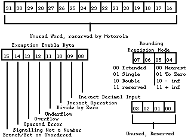 Figure 1 - Control Register Status Register (FPSR)The status register is diagrammed in Figure 2. This register is also used mostly for internal chores. The condition-code byte is set at the end of each arithmetic instruction. The condition-code byte is translated into a data type; Table 1 shows the relationship between condition codes and data types. The condition code is also used to determine logic equates. If you wish to determine if two numbers are equal, than the Compare statement (FCMP) will check the condition code. Table 2 shows the relationship between the condition codes and logic equates. The quotient byte is set at the completion of FMOD (Modulo Remainder) and FREM (IEEE Remainder). This byte can be used before a transcendental function to determine the quadrant of a circle in which an operand resides. The FP-exception status byte is used in conjunction with the exception-enable byte of the control register. The FP-accrued exception byte is used to keep a history of the FP exceptions that have occurred since the last set or clear. 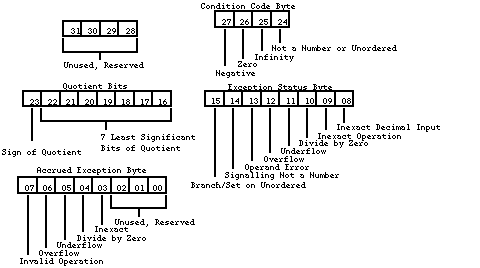 Figure 2 - Status Register 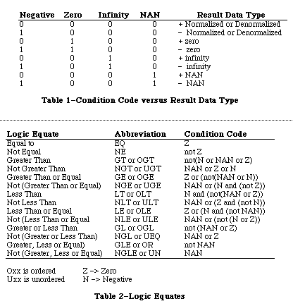 Address Register (FPIAR)Since the coprocessor can do concurrent processing with the MC68020 and MC68030, as well as with itself, the program counter is not necessarily pointing to the logical address of the instruction upon which it is working. So the address register stores the logical address of each floating-point instruction before executing it. Floating-Point Data FormatsThere are four floating-point numeric formats: single-precision binary real format, double-precision binary real format, eXtended-precision binary real format, and Pack decimal real format (a.k.a., BCD). I have given examples of what the FPU will convert your numbers to. The number which I have used for the four examples is Planck's constant (4.136 x 10[-15] eV-sec)._ Other than the size, the first three formats are very similar. The three formats all have the same conversion method and ordering of information. Single (S) 32 bitSingle precision is represented by 32 bits of information. The high bit (bit 31) is the sign bit (s). The next byte of information (bits 30-23) is the exponent (e), and the last 23 bits (bits 22-0) are the fraction (f). The bits of information are converted into a floating-point number by the following equation: 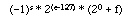 The fraction (f) is the strange value. Each bit in the fraction value represents a negative exponent of two. So if bit 22 and bit 16 are high, and all the rest of the bits are low, than the fraction would equal 0.5078125 or (2[-1]+ 2[-7])._ So when I give the FPU the number 4.136e-15, it converts the number into the hexadecimal number $04F1503DE, which, in the above equation, looks like: (-1)0*2(79-127)* 20+2-3+2-5+2-7+2-14+2-15+2-16+2-17+2-19+2-20+2-21+2-22 This number is than converted back to a base ten number as 4.13600004803759899e-15. As you can see, the number is correct up to the seventh decimal place. Double (D) 64 bitDouble precision is represented by 64 bits of information. The high bit (bit 63) is the sign bit (s), The next 11 bits of information (bits 62-52) are the exponent (e), and the last 52 bits (bits 51-0) are the fraction (f). The bits of information are converted into a floating-point number by the following equation: 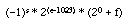 When I give the FPU the number 4.136e-15 as a double, it converts the number into the hexadecimal number $03CF2A07BBC5ED155. This number is than converted back to a base ten number as 4.13600000000000015e-15. As you can see, the number is correct up to the fifteenth decimal place. Extended (X) 96/80 bitExtended precision is represented by 96 bits of information; SANE and FP data register use 80-bit extended numbers, but the FPU extended numbers are 96 bits with 16 unused bits, so the two are basically the same. The high bit (bit 95) is the sign bit (s), The next 15 bits of information (bits 94-81) are the exponent (e), there are 16 unused bits (bits 80-64), and the last 64 bits (bits 63-0) are the fraction (f). The bits of information are converted into a floating-point number by the following equation: 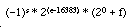 When I give the FPU the number 4.136e-15 as a extended, it converts the number into the hexadecimal number $03FCF(0000)9503DDE2F68AA66F. This number is than converted back to a base ten number as 4.136e-15. This number is correct to about the nineteenth decimal place.
When I give the FPU the number 4.136e-15 as a PDR, it converts the number into the hexadecimal number $401500041360000000000000. This hexadecimal number is filled into the above bit as follows:
This number is than converted back to a base ten number as 4.136e-15. This number is correct to the seventeenth decimal place. So What Tools Do I Have to Play With?There are four types of opcodes which the math coprocessors support: moves, monodic, dyadic, and miscellaneous conditions. When a coprocessor operation is executed, the first operation which the coprocessor performs is to convert the data to the internal extended precision format, and when the operation is completed, the data is converted to the destination data format. MovesThe first type which I will describe are the move opcodes. Below is a list of the various formats in which the move commands come.
<ea> is a main processing unit (MPU) effective address operand (any 68xxx addressing mode). <fmt> is the data format size (Byte, Word, Long, Single, Double, eXtended, Packed decimal). FPm and FPn are floating-point data registers. 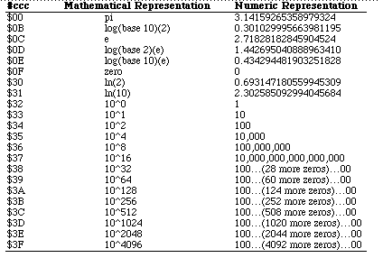 Table 3 - Constants MonodicA monodic operation has one operand. The operand may be a floating-point data register or an MPU effective address. The result is always stored in a floating-point data register. The syntax for monodic operations is listed below:
xxxx is one of the Trigonometric (SIN), Transcendental (ATANH), Exponential (ETOXM1), Misc. commands (NEG) DyadicA dyadic operation has two operands. The first operand can be in a floating-point data register, or an MPU effective address. The second operand is the contents of a floating-point data register. The result of the operation is stored in the second operand. The syntax for dyadic operations is listed below:
Condition operationsThere are four condition operations: branch (FBcc), decrement and branch (FDBcc), set according to condition (FScc), and trap on condition (FTRAPcc). Why and How do I Program for a 68882?Any code which runs on a 68881 will run on a 68882 and vice versa. You do not need to take special care to program for the 68882, but if the chip is available, than special care can noticeably improve the speed of your code. Figure 3 demonstrates the difference between code run on a 68881 and the same code run on a 68882. The 68882 is completely finished running before the 68881 has even started executing the FMOVE instruction. The extra work which you need to do to take advantage of the concurrent processing is fairly minimal. 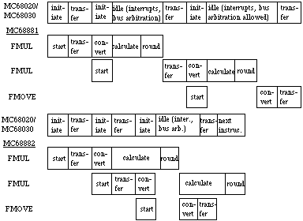 Figure 3 - Concurrent Execution versus Non-Concurrent Execution Before you jump right in and start writing code, you need to understand that there are three different levels of concurrency. The first level is the minimum concurrency operations. These are operations which cannot run concurrently with other operations. Most of these operations are non-floating-point format operations. The minimum concurrency operations are listed in Table 4. Table 4 - Minimum Concurrency 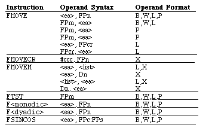 The next level of operations are the operations which can share some of the FPU time with other operations, these are the partial concurrency operations and they are listed in Table 5. The partial concurrency operations include most of the floating-point format operations. 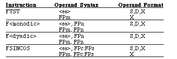 Table 5 - Partial Concurrency The highest level of concurrency is the fully-concurrent operations which are listed in Table 6. The only operations which can run fully concurrently are the FMOVE operations. There are certain guidelines which you need to follow in order to achieve full concurrency, these guidelines are outlined in Table 6. The most important rule to follow is to avoid register conflict. There are basically two type of register conflict. The first is when the destination register of an operation is the source register of the following operation, and the following operation is a fully-concurrent operation:
The second type of register conflict occurs when the destination register of an operation is the destination register of the following operation, and the following operation is a fully-concurrent operation:
No Concur Partial Concur 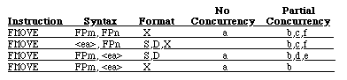 a: Register conflict of FPm with preceding instruction's destination FP data register b: NAN, unnormalized or denormalized data type c: Rounding Precision in FPCR set to Single or Double d: INEX2 bit in FPCR EXC byte is enabled e: An overflow or underflow occurs f: Register conflict of FPn with preceding instruction's destination FP data register Table 6-Fully Concurrent The next most important optimization rule is to unroll loops. If you properly unroll your loops, than you will be able to eliminate more of the register conflicts. Most loops are designed to do one iteration of a set of instructions. This means that each iteration of the loop is accomplishing one iteration of the set of instructions. If you unroll the loop, then each iteration of the loop can accomplish two or more iterations of the set of instructions. Figures 4 and 5 demonstrate how to unroll your code. The second version (Figure 5) is 25-30 percent faster than the first.
Figure 4 - Newton-Raphson's Method Xi+1 = Xi + f(Xi)/f'(Xi) : f(X) = exp(-x) - x
Figure 5 - Newton-Raphson's Method (resister-based, unrolled) Xi+1 = Xi + f(Xi)/f'(Xi) : f(X) = exp(-x) - x ConclusionThe last comment which I have to make is for code which is to run during interrupt time. If you plan to use the math coprocessor during interrupt time, you must call FSAVE at the start of your routine and FRESTORE at the end of your routine. If you do not make these calls and you interrupt another program which is using the FPU, then the other program will not find the FPU in the same state that it was in before the interrupt, and this causes certain death. For more information, refer to Technical Note #235, Cooperating with the Coprocessor. If you made it this far, and you are still awake, then
you should be already to start writing assembly routines for
your code which will speed up your math-intensive programs.
Just remember that before you try to use the code, you need
to check hasFPU with a call to ReferencesApple Numerics Manual, Second Edition Motorola MC68881/MC68882 User's Manual Technical Note M.OV.GestaltSysenvirons - Gestatlt and Sysenvirons : a Never Ending Story Technical Note M.HW.MathCoProc - Cooperating with the Coprocessor Downloadables
|
|